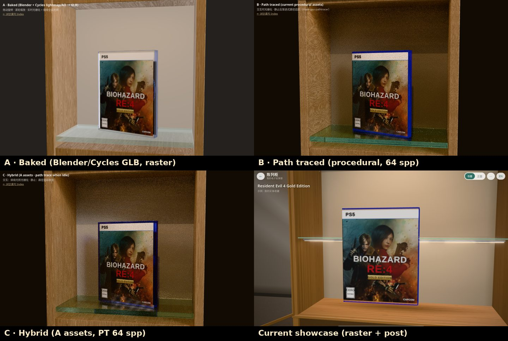

渲染方案对比 · Rendering prototypes
同一主体（RE4 Gold Edition PS5 盒，置于一格橡木展柜 + 玻璃层板 + LED），同一机位，可直接对比。拖动旋转盒子，「打开」查看内部。
A · 烘焙 Baked →
Blender 建模（倒角/书脊铰链/膜/钴蓝半透 PP）+ Cycles 烘焙柜体光照与 AO，GLB(Draco)；three.js 实时光栅 + CC0 HDRI。
B · 路径追踪 Path traced →
当前程序化模型；交互时光栅化，静止后 three-gpu-pathtracer 渐进收敛（显示采样数）。
C · 混合 Hybrid →
A 的资产用于正常浏览，静止时切换为路径追踪。
当前展柜 Current showcase →
参考：现有实现（光栅 + 后期）。
